Transitioning to Splatoon 3

As of Low Ink August 2022, 45 Low Ink events will have been hosted. The August 2022 event will be the last Low Ink to feature Splatoon 2. We’ve all gotten familiar with both playing and staffing Low Ink in Splatoon 2, but with Splatoon 3 on the horizon, we understand some players may have questions regarding this transition. We hope this page clarifies any uncertainty.
What’s happening to Low Ink?Low Ink will be switching from Splatoon 2 to Splatoon 3. Low Ink September 2022 will be the first event to feature Splatoon 3. Anyone who doesn’t own Splatoon 3 will not be able to play. What will happen to Low Ink’s eligibility?
Low Ink’s eligibility rules will remain the same during the first couple Splatoon 3 events. We expect an explosion in new players around the launch of Splatoon 3 and see no reason to let more existing competitive players enter. “Low level” competitive splatoon is a relative term and we want to prioritize supporting the newer players. We will adjust the eligibility rules as Splatoon 3 matures as a game. Will Low Ink’s format change?
Low Ink’s format will remain the same. If for whatever reason Splatoon 3 has Low Ink running ahead of schedule, we may add more games to the format. We don’t think this is likely though. What maps will we be seeing?
Splatoon 3 will launch with 12 maps. As of right now we feel it's right to run all 12 maps alongside the 4 anarchy battle modes (aka ranked modes). We will remove less popular maps as Splatoon 3 matures. For Splatoon 2’s events, we try to feature map/mode combos that are found in other tournaments to better prepare new players in the tournament scene; and we plan on doing the same for Splatoon 3. What else will change?
Unless stated elsewhere in this page, nothing else will change for Low Ink in Splatoon 3. There are details about this new game that we don’t have yet. We’ll have to change rules as we run more and more Splatoon 3 events. I got banned during Splatoon 2, can I play now?
Probably not. If you have any questions regarding Low Ink's transition to Splatoon 3, feel free to ask staff directly in the #li-helpdesk channel in the Inkling Performance Labs discord. Get the Low Ink role from #rules-and-roles to see the channel.